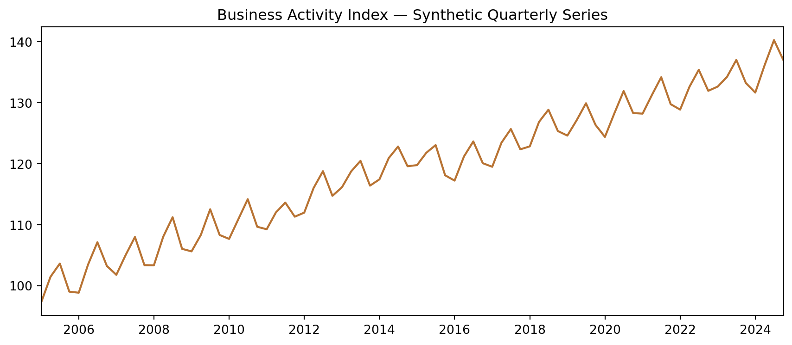
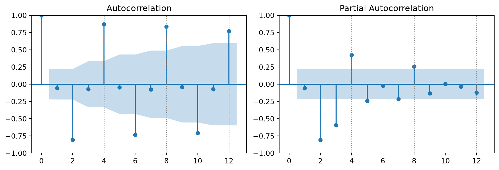
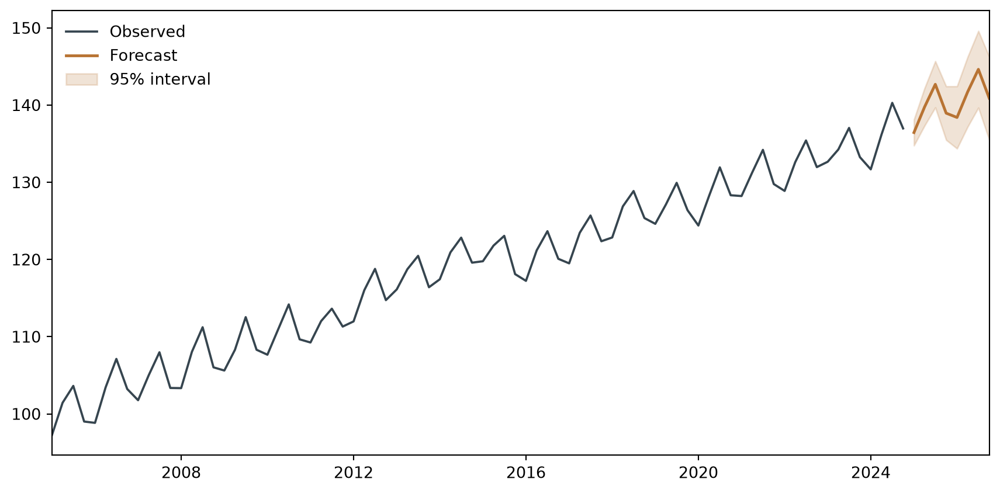

| business_activity_index | |
|---|---|
| date | |
| 2005-01-01 | 97.250 |
| 2005-04-01 | 101.434 |
| 2005-07-01 | 103.622 |
| 2005-10-01 | 99.006 |
| 2006-01-01 | 98.834 |
Week 5
2026-08-24
Set up your course lab repository, then apply the Chapter 4 toolkit — unit root testing, ARIMA, and SARIMA — to a real dataset you’ve committed to GitHub yourself.
LAB SESSION — Week 5 — Lab 1
This is the first entry in a repository that will grow with you across the semester — one folder per lab, starting today with lab_1/.
ECON5371-labs repository — separate from your personal websitelab_1/ folder containing your data, your code, and a README documenting what’s insideWhy a separate repo from your website?
Your website is a professional artifact — polished, public-facing. This repo is your working lab notebook: rougher, iterative, and graded on process as much as polish.
ECON5371-labs (or similar — this one has no naming constraint, since it doesn’t need to match a GitHub Pages URL)Different from Week 4 on purpose
Your website repo required the exact name username.github.io for Pages to work. This repo has no such constraint — name it whatever makes sense to you.
Use the same course working folder from Week 4.
If you don’t remember where your course folder is, revisit Week 4’s lab — same location works for everything this semester.
Inside your cloned repo, create a folder for today’s work:
Every lab this semester gets its own top-level folder — lab_1/, lab_2/, and so on. Each one is self-contained: its own data, its own script, its own README.
I’ve posted gdp_synthetic.csv on Blackboard. Download it now and move it into lab_1/.
Exact filename and location matter
Save it as gdp_synthetic.csv inside lab_1/ — not the Downloads folder, not renamed. The code we write today assumes this exact path.
Confirm it’s in place:
This is the key sequencing move today: we push the data first, before writing any analysis code. That’s what lets us read it straight from GitHub in a moment.
Confirm it worked
Refresh your repository page on GitHub. You should see lab_1/gdp_synthetic.csv listed. Click into it — GitHub will preview the CSV contents.
Open the README.md GitHub created for you and replace its contents with something like this — short today, it will grow with each lab.
We’ll add a second, lab-specific README inside lab_1/ itself later today — this top-level one is the repo’s front door.
The page you were just looking at is not the URL Python needs. That page is GitHub’s viewer — it wraps your file in a website. We need the raw file itself.
| URL type | Looks like | Use for |
|---|---|---|
| Normal (viewer) | github.com/user/repo/blob/main/... |
Browsing in a browser |
| Raw (file content) | raw.githubusercontent.com/user/repo/main/... |
Reading in Python |
Common mistake
Pasting the normal github.com/.../blob/... URL into pd.read_csv() returns an HTML page, not a CSV — pandas will fail with a confusing parsing error. Always use the raw.githubusercontent.com form.
On your file’s GitHub page, click the Raw button — GitHub gives you the correct URL directly. It will look like this:
https://raw.githubusercontent.com/yourusername/ECON5371-labs/main/lab_1/gdp_synthetic.csvSwap in your own username and confirm the repo name matches what you created. Copy this exact URL — you’ll paste it into Python next.
What you’ll see on screen today
I’ll demonstrate with my own repo’s URL, pointing at my copy of the same dataset. The pattern is identical — only the username and repo name differ once you build yours.
| business_activity_index | |
|---|---|
| date | |
| 2005-01-01 | 97.250 |
| 2005-04-01 | 101.434 |
| 2005-07-01 | 103.622 |
| 2005-10-01 | 99.006 |
| 2006-01-01 | 98.834 |
Use your own URL, not mine
The URL above points to my repository. Replace it with the raw URL from your own lab_1/gdp_synthetic.csv before running this cell — otherwise you’re reading my data, not the copy you just committed.
Why this matters beyond today
This is exactly how you’ll pull your own project’s data later in the semester, and how anyone — a classmate, a referee, future-you — replicates your analysis without needing your laptop.

Look at the shape before running a single test. Do you see a trend? A repeating pattern? That’s your eyes doing preliminary diagnosis — the formal tests come next.
ADF — Augmented Dickey-Fuller
\(H_0\): the series has a unit root (non-stationary). \(H_1\): the series is stationary.
KPSS
\(H_0\): the series is stationary. \(H_1\): the series has a unit root (non-stationary).
Notice the null hypotheses point in opposite directions — that’s by design. Running both gives us a joint check, not just one test’s opinion.
ADF statistic: -0.1143
p-value: 0.9480
Lags used: 8ADF statistic −0.1143, p-value 0.9480. We fail to reject \(H_0\) — this is consistent with a unit root.
KPSS statistic: 1.4310
p-value: 0.0100KPSS statistic 1.4310, p-value 0.0100. We reject \(H_0\) — the series is not stationary.
Both tests agree
ADF fails to reject non-stationarity, and KPSS rejects stationarity. Two independent tests, same conclusion — a genuinely unit-root series, not a borderline call.
date
2005-04-01 4.184
2005-07-01 2.188
2005-10-01 -4.616
2006-01-01 -0.172
2006-04-01 4.603
Name: diff, dtype: float64.diff() computes \(y_t - y_{t-1}\). The first observation becomes missing by construction — .dropna() removes it before testing.
ADF: statistic = -3.0050, p-value = 0.0344
KPSS: statistic = 0.0921, p-value = 0.1000ADF: statistic −3.0050, p-value 0.0344 — now we reject \(H_0\). KPSS: statistic 0.0921, p-value ≥ 0.10 — we fail to reject stationarity.
Verdict: \(I(1)\)
Both tests flip after one difference and agree the differenced series is stationary. The level series is integrated of order 1.

Dotted lines mark the seasonal lags — 4, 8, 12 — where we’d expect a quarterly pattern to show up.
Look at lags 4, 8, and 12 specifically: ACF values of +0.87, +0.84, +0.77 — a strong, repeating spike exactly at the seasonal frequency.
This is a seasonality signature
A short-run ARMA pattern fades out gradually. A sharp, isolated spike recurring every 4 lags is the fingerprint of quarterly seasonality — this series needs a seasonal term, not just a non-seasonal ARMA.
Start simple, ignoring seasonality for a moment, just to see what a plain ARIMA captures:
AIC: 394.860
BIC: 401.969Keep these numbers — we’ll compare them to a seasonal specification in a moment.
SARIMAX Results
=========================================================================================
Dep. Variable: y No. Observations: 80
Model: SARIMAX(1, 0, 1)x(0, 1, 1, 4) Log Likelihood -91.836
Date: Mon, 24 Aug 2026 AIC 193.673
Time: 13:23:39 BIC 205.326
Sample: 01-01-2005 HQIC 198.330
- 10-01-2024
Covariance Type: opg
==============================================================================
coef std err z P>|z| [0.025 0.975]
------------------------------------------------------------------------------
intercept 0.7085 0.272 2.602 0.009 0.175 1.242
ar.L1 0.6201 0.146 4.254 0.000 0.334 0.906
ma.L1 0.2727 0.180 1.517 0.129 -0.080 0.625
ma.S.L4 -0.8025 0.081 -9.898 0.000 -0.961 -0.644
sigma2 0.6164 0.098 6.316 0.000 0.425 0.808
===================================================================================
Ljung-Box (L1) (Q): 0.00 Jarque-Bera (JB): 0.79
Prob(Q): 0.99 Prob(JB): 0.67
Heteroskedasticity (H): 1.11 Skew: -0.22
Prob(H) (two-sided): 0.80 Kurtosis: 3.22
===================================================================================
Warnings:
[1] Covariance matrix calculated using the outer product of gradients (complex-step).auto_arima selects SARIMA(1,0,1)(0,1,1)[4] — AIC 193.67, clearly better than our plain ARIMA(1,1,1) candidate.
auto_arima is a search tool, not a black box
It searches efficiently over a grid of specifications — it does not know economics. Always sanity-check the result against what the ACF/PACF told you, the way we just did.
Four pieces, each with a plain-language job:
| Term | Meaning |
|---|---|
| \((1,0,1)\) non-seasonal | Short-run AR(1) and MA(1) dynamics quarter to quarter |
| \((0,1,1)\) seasonal | One seasonal difference removes the repeating pattern; one seasonal MA term captures leftover seasonal correlation |
| \([4]\) | The seasonal period — 4 quarters |
Why \(D=1\) and not a seasonal AR term?
auto_arima found that differencing at lag 4 — comparing each quarter to the same quarter a year earlier — removes the seasonal pattern more efficiently than trying to model it with an AR term.
SARIMAX Results
=========================================================================================
Dep. Variable: business_activity_index No. Observations: 80
Model: SARIMAX(1, 0, 1)x(0, 1, 1, 4) Log Likelihood -99.295
Date: Mon, 24 Aug 2026 AIC 206.590
Time: 13:23:39 BIC 215.913
Sample: 01-01-2005 HQIC 210.316
- 10-01-2024
Covariance Type: opg
==============================================================================
coef std err z P>|z| [0.025 0.975]
------------------------------------------------------------------------------
ar.L1 0.9967 0.006 153.636 0.000 0.984 1.009
ma.L1 0.0492 0.104 0.474 0.635 -0.154 0.253
ma.S.L4 -0.8148 0.106 -7.675 0.000 -1.023 -0.607
sigma2 0.7359 0.136 5.414 0.000 0.469 1.002
===================================================================================
Ljung-Box (L1) (Q): 0.00 Jarque-Bera (JB): 0.51
Prob(Q): 0.95 Prob(JB): 0.78
Heteroskedasticity (H): 1.02 Skew: -0.15
Prob(H) (two-sided): 0.96 Kurtosis: 2.74
===================================================================================
Warnings:
[1] Covariance matrix calculated using the outer product of gradients (complex-step).AR(1) coefficient 0.620 (significant), seasonal MA coefficient −0.803 (significant) — both terms are doing real work, not just padding the specification.
2025-01-01 136.441257
2025-04-01 139.756199
2025-07-01 142.686279
2025-10-01 138.951576
2026-01-01 138.395424
Freq: QS-OCT, Name: predicted_mean, dtype: float64
Notice the forecast continues the seasonal zigzag — the model learned the quarterly pattern and projects it forward, with widening uncertainty as the horizon grows.
Create a second README, this one specific to today’s folder: lab_1/README.md.
# Lab 1 — Non-Stationary Models, Seasonality
## What this does
Applies unit root testing (ADF, KPSS), ARIMA identification,
and SARIMA estimation to a synthetic quarterly series with a
stochastic trend and seasonal pattern.
## Data
`gdp_synthetic.csv` — 80 quarterly observations (2005Q1–2024Q4),
one column: `business_activity_index`.
## How to run
1. Open `lab_1_analysis.qmd` (or `.py`) in Positron
2. Run cells top to bottom — no external setup required
beyond the packages listed below
## Requirements
`pandas`, `statsmodels`, `pmdarima`, `matplotlib`
## Key result
ADF/KPSS jointly confirm the series is I(1). auto_arima selects
SARIMA(1,0,1)(0,1,1)[4] as the best specification (AIC = 193.67).This is a replication instruction, in miniature
Anyone — a classmate, a grader, future-you — should be able to read this file and rerun your analysis without asking you a single question.
Python leaves behind files you don’t want in your repo — cached bytecode, notebook checkpoints. A .gitignore file tells Git to ignore them automatically.
Save this as .gitignore in your repo’s root folder (not inside lab_1/) — it applies to the whole repository.
git add . stages every change since your last commit — your script, both README files, and .gitignore — in one pass.
Check your work
Refresh your repository on GitHub. Confirm you can see: lab_1/gdp_synthetic.csv, your analysis script, lab_1/README.md, the top-level README.md, and .gitignore.
raw.githubusercontent.com link that serves a file’s actual content, suitable for pd.read_csv() — distinct from the browser-facing github.com/.../blob/... page.
Your ECON5371-labs repository now has its first entry. From here:
lab_1/ stays as-is — a record of today’s workSee you at Lab 2 — Week 7
ECON-5371 · Time Series Analysis and Forecasting
Comments explain why, print() reports numbers
Go back through your script and apply one consistent rule: interpretive content lives in comments,
print()is for numeric output only.What this avoids
Don’t
print("This confirms the series is non-stationary!")— that’s narration masquerading as output. Say it in a comment, where it belongs; letprint()report the number that backs it up.